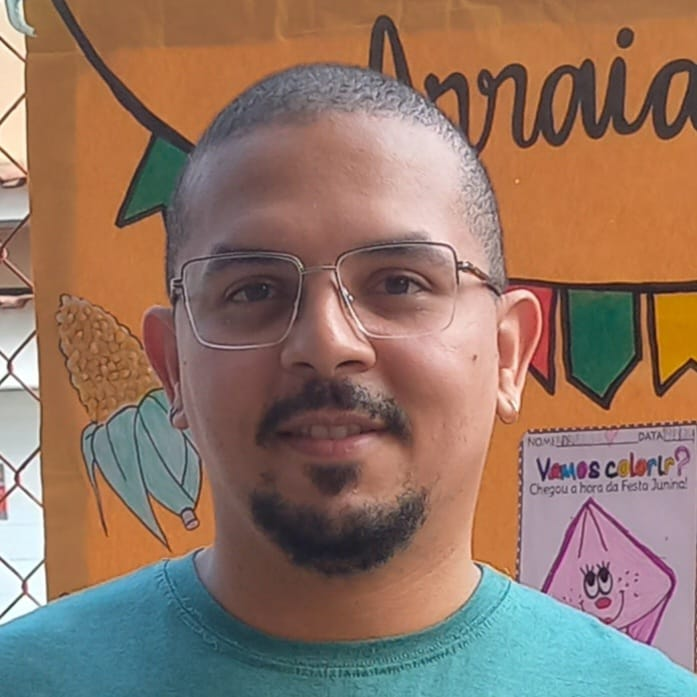

LinkedIn
Contact Me
My Hobbies
Summary
Student of Computer Engineering with over a decade of experience in computer maintenance. Possess experience in telecommunications, 3D modeling, and 3D printing. Skilled in web development and design.
Education
- Computer Maintenance, SENAI Institution
- image recognition with Python, Online OpenCV Course
- Bachelor in Computer Engineering (4th period), CEFET/RJ University
Work Experience
RL Cursos
Instructor - Python Basic Course | 3 months
- Taught Python fundamentals, including script creation and programming logic.
- Guided students through hands-on projects and problem-solving exercises.
Key Achievements:
- Enhanced student understanding of Python programming.
- Developed engaging course materials for beginners.
Evolute
Computer Science Instructor | 1 year
- Taught computer skills, programming basics, and technology tools.
- Emphasized hands-on learning and student interaction.
Key Achievements:
- Trained new instructors in teaching methods.
- Designed practical lessons that improved student engagement.
Serede
Support and Repairs Technician | 3 months
- Maintained telecommunications systems and network connections.
- Diagnosed and repaired ADSL and network issues.
Key Achievements:
- Improved problem-solving efficiency in technical support.
- Developed independent troubleshooting skills.
Skills
- Computer Maintenance
- 3D Modeling (Blender/Rhinoceros)
- 3D Printing (FDM/Resin)
- Python
- C
- HTML
- CSS
- JavaScript
- React
- Node.js